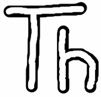
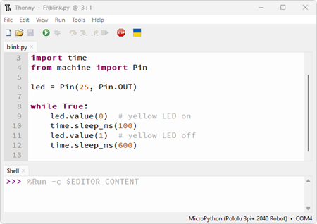

Thonny es un entorno de desarrollo integrado (IDE) diseñado para ser simple e intuitivo, ideal para aprender y trabajar con Python y MicroPython. En este curso, será la herramienta principal para programar el ESP32.

-
Características útiles de Thonny
- Resaltado de sintaxis y autocompletado.
- Depuración paso a paso.
- Vista de variables y pila de ejecución.
- Instalación de paquetes mediante Tools → Manage packages....
-
Ventajas para MicroPython

A diferencia de otros entornos, Thonny permite:- Cargar programas y ejecutarlos inmediatamente en el ESP32.
- Usar la consola interactiva para pruebas rápidas.
- Integrar el flujo de desarrollo con el trabajo en hardware, ideal para proyectos de IoT.